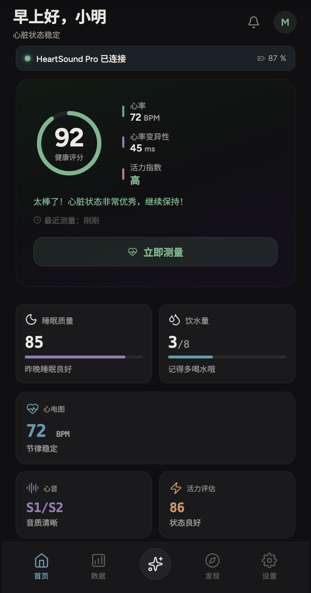
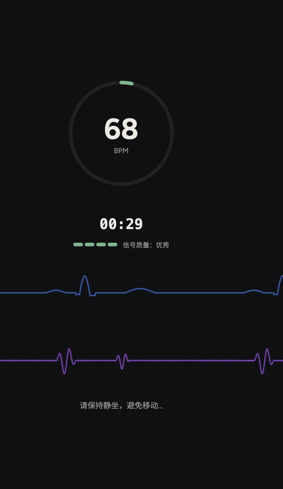
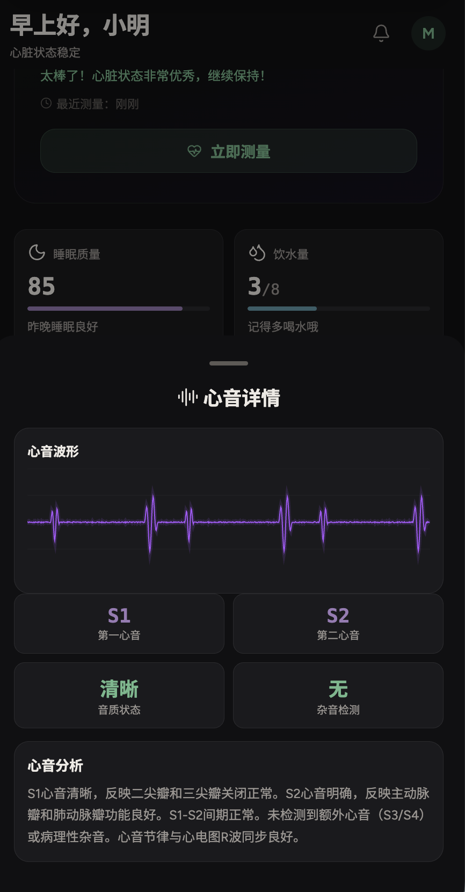
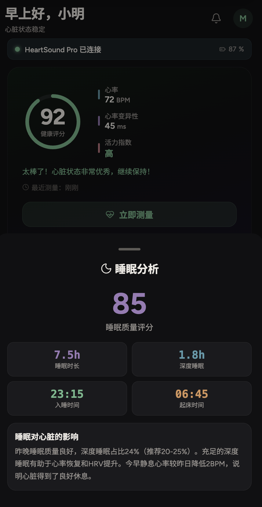
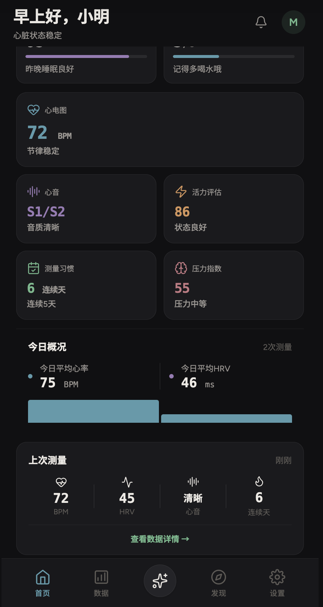

心声环
¥1,599 起
心音+心电双模态，日常居家筛查。9/14 临床金标准指标覆盖，一次检出率 80%+。
- 心音 + 心电双留存
- 专属 App + AI 解读
- 长续航 · 便携佩戴
- 三种佩戴模式

一台设备，三种形态。从日常时尚到专业监测，心声环随心切换。

银质链条搭配水滴形挂坠，贴近胸口采集信号，日常佩戴如饰品般自然优雅。
轻巧磁吸环扣，隐蔽固定于衣领内侧，无需外露，适合商务与日常场景。
直接贴附胸口皮肤，最大化信号采集质量，适合专业心脏监测与临床级数据需求。
深空黑、月岩灰、星辉银 —— 每种配色均搭配同色系磁吸环配件，融入你的个人风格。
医疗级传感与 AI 的深度融合，重新定义居家心脏监测。
覆盖结构性心脏病与节律异常，14 类心脏病理信号识别，单一信号难以捕捉的早期异常也能发现。
居家即时测量，无需预约到医院。一次成功检出率 80%+，临床金标准准确率最高达 95%。
是否就医、如何就医 —— 结构化建议与资源衔接，降低就医摩擦，从发现到行动闭环。
超低功耗设计，日常连续使用无压力。磁吸无线充电底座，放下即充。
从实时测量到 AI 解读，从睡眠分析到心音详情，你的心脏助手始终在手。

健康评分、心率、活力指数、睡眠质量，首页一览无余。

30 秒完成检测，心电（蓝色）+ 心音（紫色）双波形实时显示。

S1/S2 心音波形可视化，音质状态、杂音检测、AI 分析报告。

睡眠质量评分，深睡时长，睡眠对心脏的影响 AI 解读。

测量习惯、压力指数、今日概况，健康趋势一目了然。
水滴形的人体工学设计，贴合胸骨区域曲线，确保心音与心电信号的最优采集角度。
磁吸配件、项链配件、贴肤配件 —— 一台心声环，满足所有使用场景。
心血管疾病高危人群、术后随访、老年慢病管理、以及关注心脏健康的运动与日常人群。